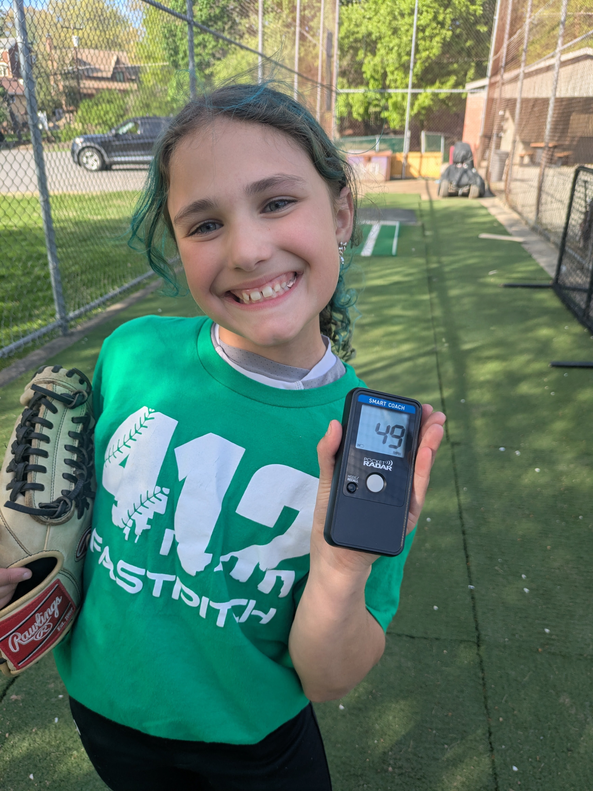
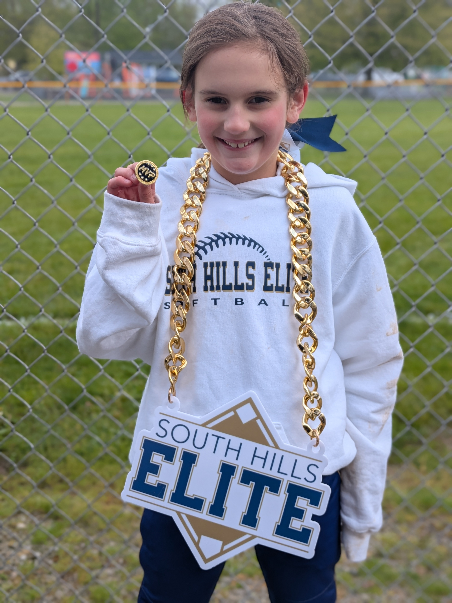
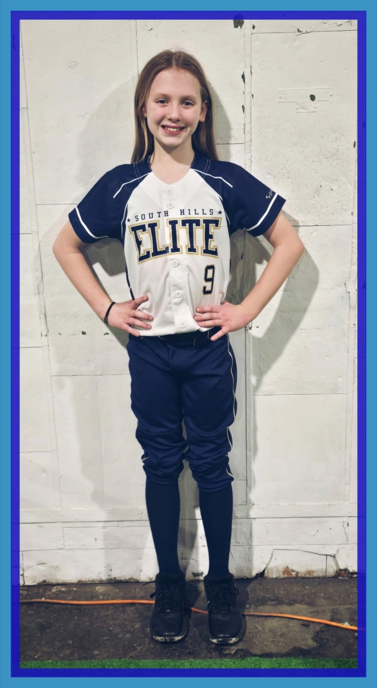

Defense & Fielding
Players will practice athletic ready position, moving through the ball, glove angles, two-hand security, and quick transitions into throwing. The goal is to make defense feel simple, active, and fun.
Join the GBWAA 10U All-Stars for a fastpitch softball clinic fundraiser designed for young athletes who want to learn the game the right way. Players will rotate through upbeat stations focused on defense, grounders, hitting, pitching fundamentals, teamwork, and game-ready confidence.
Sign Up Your PlayerThis clinic is built around the skills young softball players need most: a strong foundation, lots of touches, positive coaching, and the confidence to try hard things. The GBWAA 10U All-Stars will help demonstrate drills and cheer on the next wave of 6U and 8U players.
Players will practice athletic ready position, moving through the ball, glove angles, two-hand security, and quick transitions into throwing. The goal is to make defense feel simple, active, and fun.
Ground-ball stations will focus on reading hops, staying low, using soft hands, and making accurate throws to a target. Players will learn how small details create cleaner plays in games.
Hitters will work on stance, load, timing, balanced swings, contact through the ball, and finishing strong. Drills will keep players moving while helping them understand how to attack good pitches.
Fastpitch pitching instruction is for interested 8U level players/sign-ups only and will introduce grip, arm circle, stride direction, release point, and follow-through in an age-appropriate way. Beginners are welcome, and the focus will be on safe mechanics and confidence.
Clinic participants will learn from 10U All-Star players who remember what it felt like to be new to the game. The day is about building skills while showing younger players what teamwork looks like.
Every $30 sign-up supports the Baldwin 10U All-Stars. Clinic dates are June 29 and June 30 from 6:00-7:30 PM, with July 1 and July 2 reserved as rainout makeup days if needed.
Parents can reserve a spot now for June 29 and June 30 from 6:00-7:30 PM. Cost is $30, and all proceeds go toward the Baldwin 10U All-Stars.
Each staff page introduces one of the 10U All-Star players helping younger athletes learn fastpitch fundamentals, build confidence, and have fun supporting the team fundraiser.


